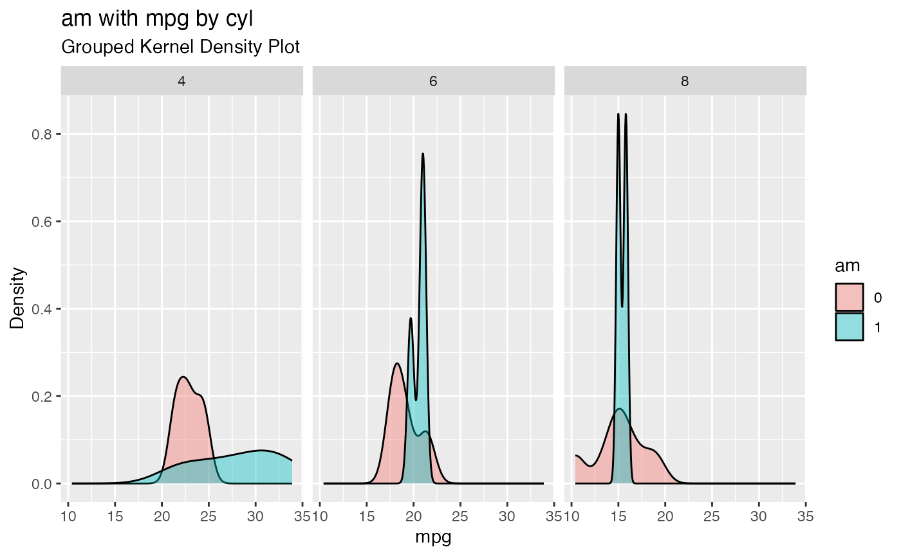

Plotting with thePlot
qacPlot.RmdThe purpose of the qacPlot package is to help users
quickly identify suitable plot types and visualize variables they are
interested in. The only function thePlot can handle
univariate, bivariate and multivariate graphs of a dataset based on
variable types (categorical or quantitative).
library(qacPlot)Example Dataset
Let’s use our favorite one mtcars as an example.
data(mtcars)Data Management
Since thePlot relies on the type of variables
(categorical or quantitative) for selecting plots, you will need to
manage the variables you are using thePlot for before using
the function.
Typically, you should pay attention to numeric variables that are supposed to be categorical in the dataset. For example, the cyl variable in mtcars should be a categorical variable, but its class is numeric.
You can copy the following codes to manage the variables in mtcars:
Let’s Plot!
Now we can start plotting with thePlot. Let’s take a
look at univariate, bivariate, and multivariate graphs one by one.
Univariate
When you only want to visualize one variable, you need to specify the data frame and the variable. You can use this syntax:
thePlot(mydata, Variable1)
thePlot(mtcars, am)
Bivariate
If you are interested in the relationship between two variables, you can follow this syntax:
thePlot(mydata, ExplanatoryVariable, ResponseVariable)
thePlot(mtcars, cyl, mpg)
Multivariate
thePlot can handle up to 3 variables. You can visualize
the relationship between an explanatory variable and a response variable
grouped by a third variable. Notes: the third variable must be a
categorical variable.
You can use this syntax:
thePlot(mydata, ExplanatoryVariable, ResponseVariable, GroupVariable)
thePlot(mtcars, am, mpg, vs)List of cases
There are 10 scenarios in total. You can find the corresponding plot type of each scenario in the following table.


Bivariate - Categorical Explanatory v.s. Categorical Response
thePlot(mtcars, am, vs)Bivariate - Quantitative Explanatory v.s. Categorical Response
thePlot(mtcars, mpg, am)
Multivariate - Categorical Explanatory v.s. Categorical Response, grouped by Categorical
thePlot(mtcars, am, vs, cyl)Multivariate - Categorical Explanatory v.s. Quantitative Response, grouped by Categorical
thePlot(mtcars, am, mpg, cyl)
Multivariate - Quantitative Explanatory v.s. Categorical Response, grouped by Categorical
thePlot(mtcars, mpg, am, cyl)Multivariate - Quantitative Explanatory v.s. Quantitative Response, grouped by Categorical
thePlot(mtcars, mpg, wt, cyl)More Resources of Plotting in R
There are actually a lot more plot types for each scenario listed above. You can check out this website to explore.
Happy Plotting!